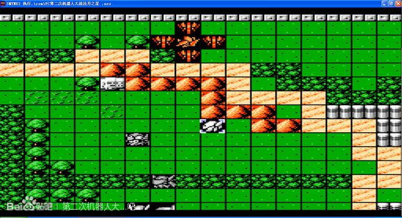
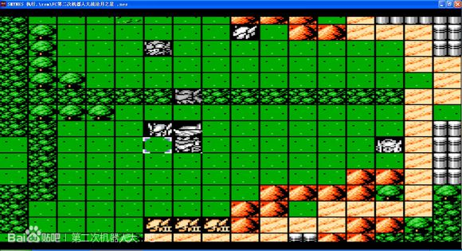
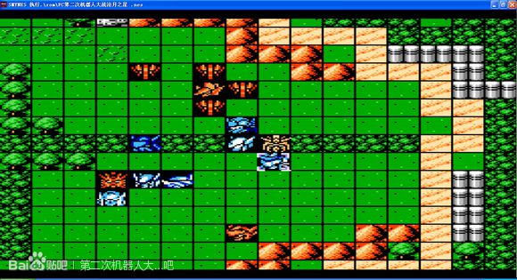
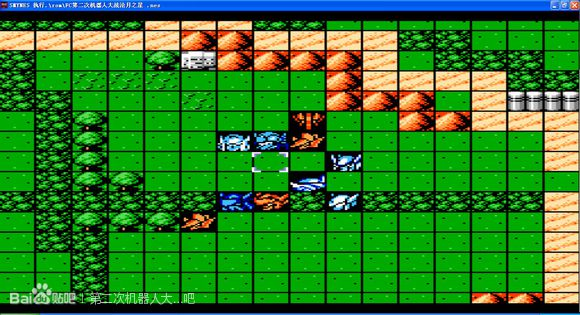
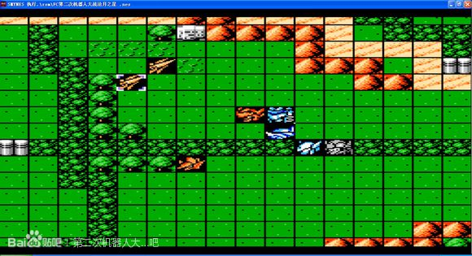
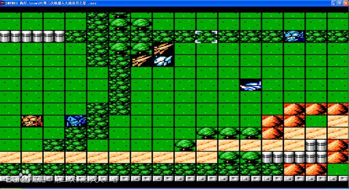
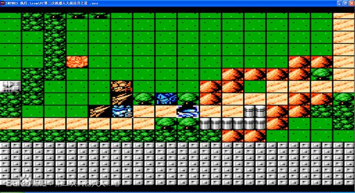
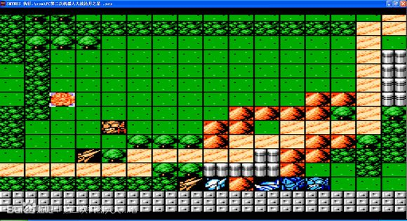
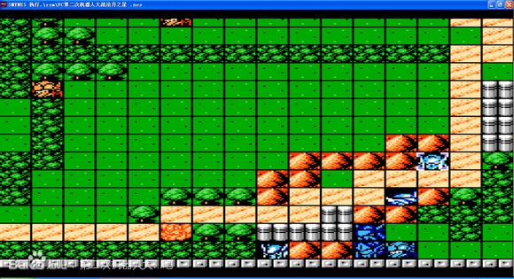
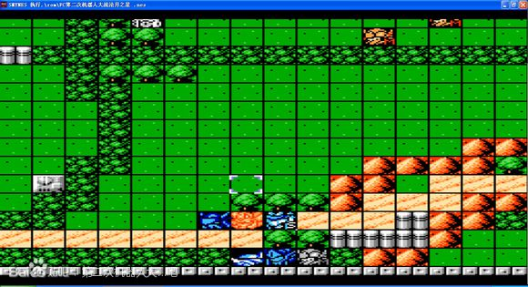

第四话 樱・之花
拉托尼登场 下去牵制三个亡灵Ⅱ 有干扰电波SL下保证不爆机就可以了 来恩先上去几个远程的打残
让拉托尼升到Lv8 卡下经验


几个远程下来后 配合精神打爆 来恩保留热血
萨奥拉与阿拉德过来后拉托尼多用用回避 剧情后精神会恢复 英子会出现
我方同时支援拉米亚
来恩去牵制一下天岛与瓦修 其他人上主舰准备向后撤 顺便接应一下拉米亚然后走到下方卡位






逐个歼灭 剩下英子的时候龙胜去引一下上面两个远程 拉托尼用或者回避干扰电波避开英子的攻击 配合加血基地拉米亚莱恩热血打爆英子 让Lv8的拉托尼飞升LV16 有爱心


龙胜这关不能被击落 否则第五关不能变形飞空